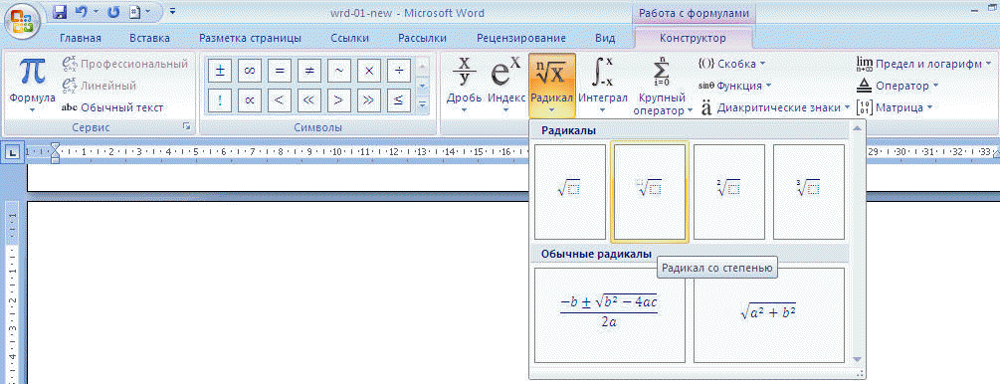

MS Word позвол€ет вставл€ть в текст документа довольно сложные математические формулы.
ƒл€ вставки формулы на вкладке ¬ставка выберите ‘ормула . ≈сли в раскрывшемс€ списке часто используемых формул нет нужной, выберите ¬ставить новую формулу. Ќа по€вившейс€ вкладке –абота с формулами в онструкторе выберите шаблон дл€ вставки необходимого символа:

ѕримечание. ƒл€ выхода из редактора формул достаточно щелкнуть курсором за пределами области формулы.